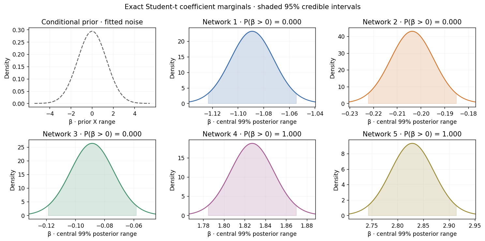
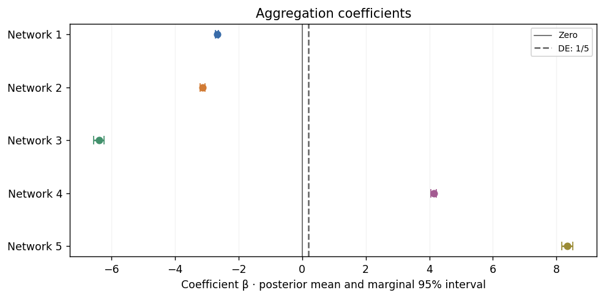
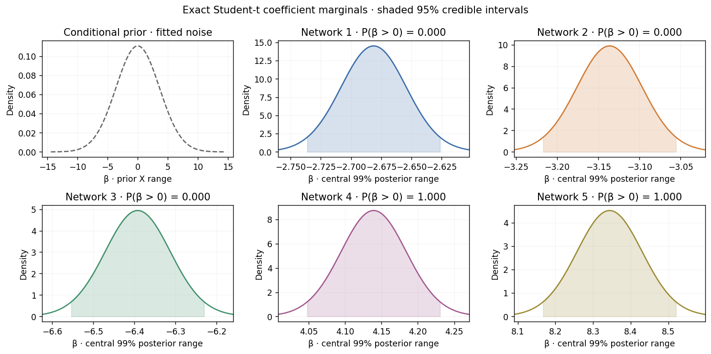
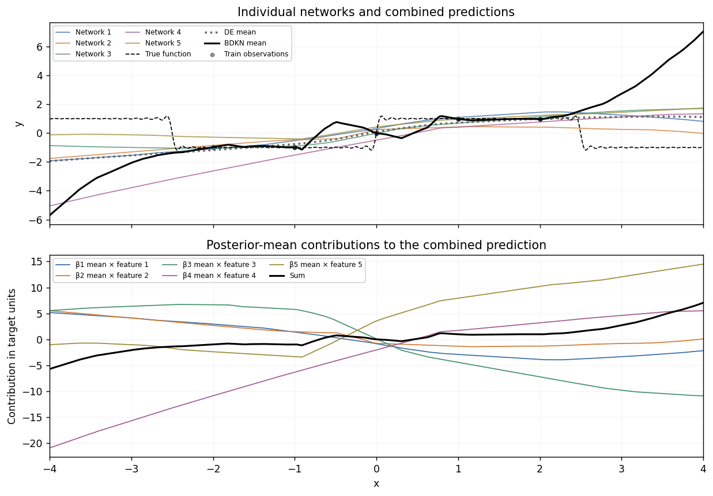
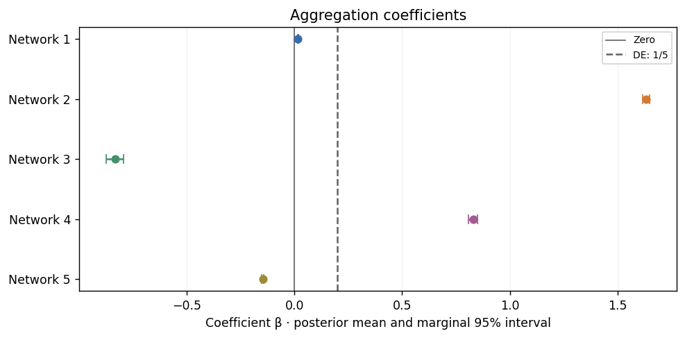
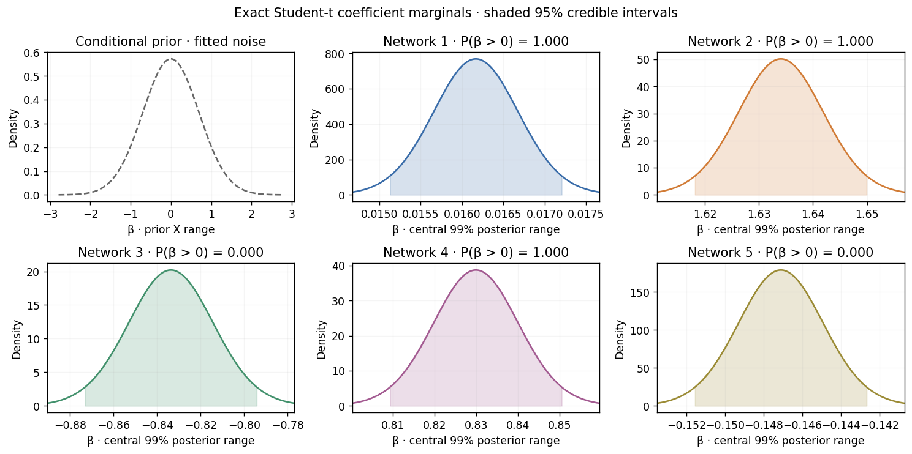
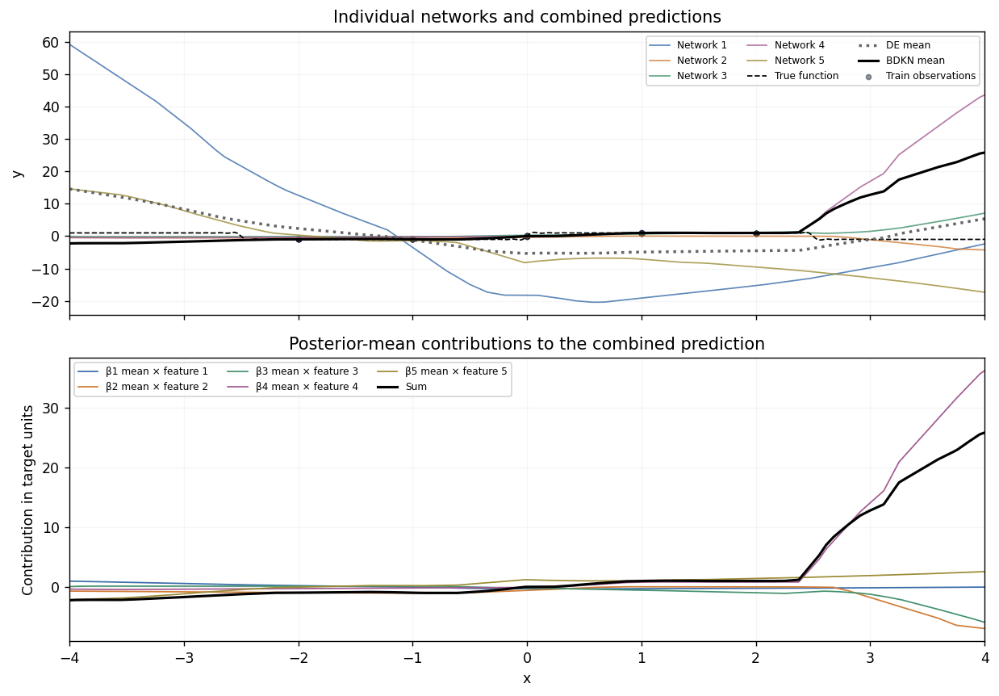
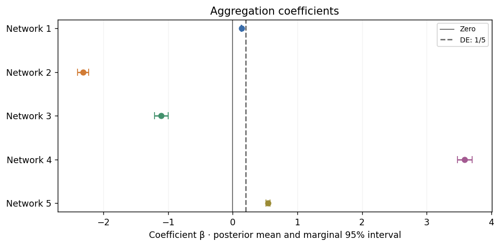
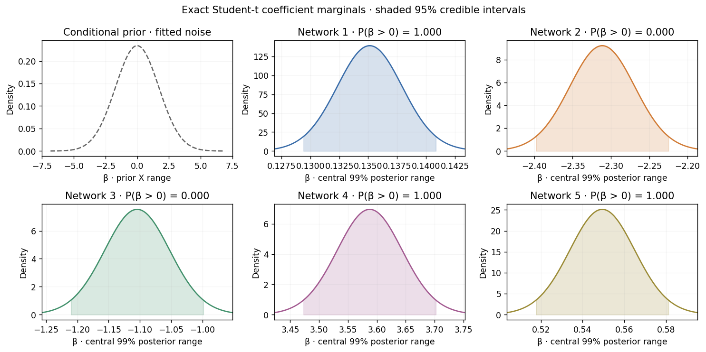
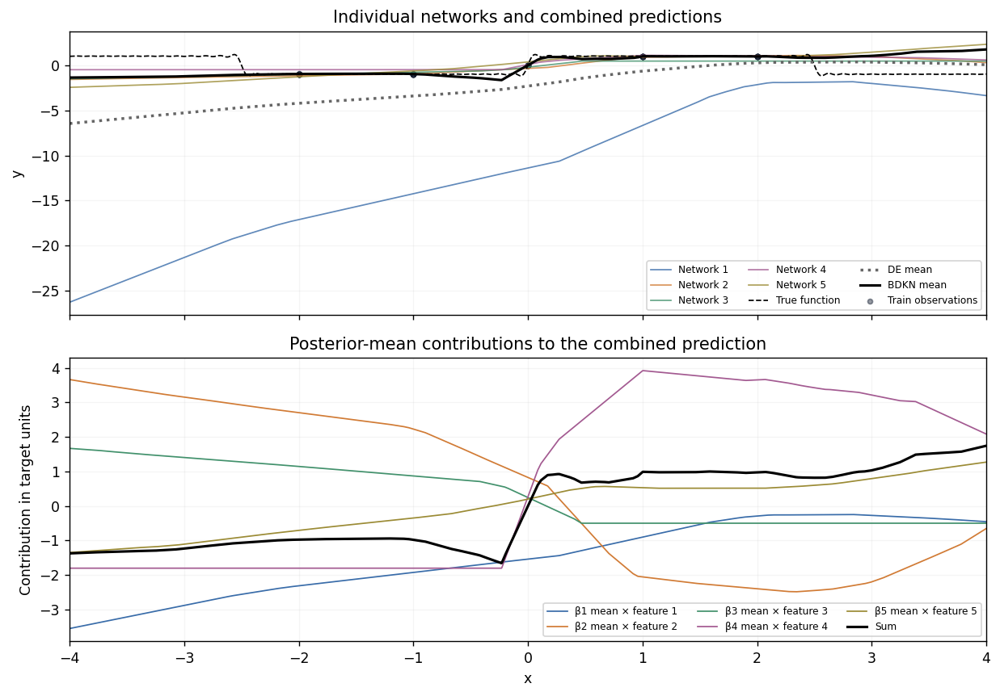

Regression comparison
Download resultsAggregation weights
Coefficients can be negative and need not sum to one. Intervals describe coefficient uncertainty; the dashed reference is DE’s fixed 1/H weight.
BDKN



Each density panel uses its own X range for readability; coefficient intervals above share a common axis. Prior reference conditions on fitted noise. Contribution shares use held-out inputs; test targets are used only for scoring.
| Network | β mean | 95% low | 95% high | P(β > 0) | Contribution share | Test RMSE | Test NLL |
|---|---|---|---|---|---|---|---|
| 1 | -1.08889 | -1.12321 | -1.05456 | 0.00000 | 0.37187 | 2.23561 | 24.15182 |
| 2 | -0.20365 | -0.22217 | -0.18513 | 0.00000 | 0.03441 | 1.28450 | 3.71973 |
| 3 | -0.08854 | -0.11880 | -0.05827 | 0.00000 | 0.01182 | 1.22805 | 6.39771 |
| 4 | 1.82726 | 1.78476 | 1.86977 | 1.00000 | 0.39180 | 1.38488 | 53.78197 |
| 5 | 2.82827 | 2.74286 | 2.91369 | 1.00000 | 0.19009 | 1.06486 | 1.58756 |
Functional repulsion · BDKN



Each density panel uses its own X range for readability; coefficient intervals above share a common axis. Prior reference conditions on fitted noise. Contribution shares use held-out inputs; test targets are used only for scoring.
| Network | β mean | 95% low | 95% high | P(β > 0) | Contribution share | Test RMSE | Test NLL |
|---|---|---|---|---|---|---|---|
| 1 | -2.68130 | -2.73618 | -2.62641 | 0.00000 | 0.12045 | 1.50474 | 527.95007 |
| 2 | -3.13634 | -3.21699 | -3.05570 | 0.00000 | 0.07637 | 1.22329 | 1.68361 |
| 3 | -6.39203 | -6.55341 | -6.23064 | 0.00000 | 0.26244 | 1.44247 | 99.81193 |
| 4 | 4.13925 | 4.04805 | 4.23046 | 1.00000 | 0.28772 | 2.44278 | 7.27322 |
| 5 | 8.34388 | 8.16746 | 8.52030 | 1.00000 | 0.25303 | 1.31483 | 69.35594 |
Weight repulsion · BDKN



Each density panel uses its own X range for readability; coefficient intervals above share a common axis. Prior reference conditions on fitted noise. Contribution shares use held-out inputs; test targets are used only for scoring.
| Network | β mean | 95% low | 95% high | P(β > 0) | Contribution share | Test RMSE | Test NLL |
|---|---|---|---|---|---|---|---|
| 1 | 0.01617 | 0.01513 | 0.01720 | 1.00000 | 0.03747 | 21.59710 | 4.41114 |
| 2 | 1.63406 | 1.61818 | 1.64994 | 1.00000 | 0.14453 | 1.16662 | 4.95223 |
| 3 | -0.83366 | -0.87311 | -0.79420 | 0.00000 | 0.09980 | 2.08671 | 1.59065 |
| 4 | 0.82994 | 0.80936 | 0.85053 | 1.00000 | 0.56779 | 12.22387 | 36459862.62633 |
| 5 | -0.14710 | -0.15155 | -0.14265 | 0.00000 | 0.15041 | 8.92776 | 3.63584 |
First-order repulsion · BDKN



Each density panel uses its own X range for readability; coefficient intervals above share a common axis. Prior reference conditions on fitted noise. Contribution shares use held-out inputs; test targets are used only for scoring.
| Network | β mean | 95% low | 95% high | P(β > 0) | Contribution share | Test RMSE | Test NLL |
|---|---|---|---|---|---|---|---|
| 1 | 0.13513 | 0.12941 | 0.14085 | 1.00000 | 0.19259 | 13.23388 | 4.19751 |
| 2 | -2.31131 | -2.39772 | -2.22490 | 0.00000 | 0.28846 | 1.32441 | 91.45005 |
| 3 | -1.10427 | -1.21003 | -0.99851 | 0.00000 | 0.10302 | 1.21985 | 74.55373 |
| 4 | 3.58773 | 3.47311 | 3.70235 | 1.00000 | 0.32604 | 1.08029 | 5.56271 |
| 5 | 0.54944 | 0.51770 | 0.58118 | 1.00000 | 0.08989 | 1.78621 | 2.09923 |